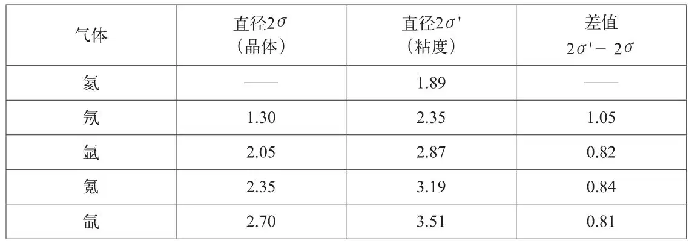
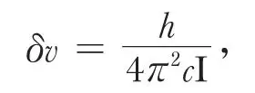
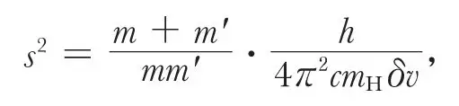
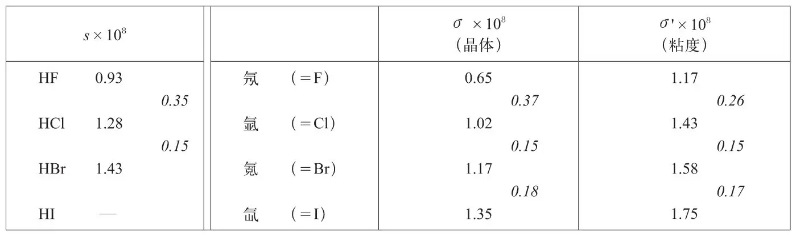

英文
英文布拉格，贝尔
编者按
20世纪20年代初期的物理学家总想应用1913年玻尔提出的模型来努力理解原子的物理结构，在玻尔的模型中，电子填充原子核外的壳层。玻尔的理论预言，在周期表中任意一个周期（一行）的元素应该具有大致相同的原子尺寸，但是从一个周期变化到下一个周期时，原子的大小将发生显著的变化。在这篇文章中，劳伦斯·布拉格和贝尔列举了各种原子的尺寸数据，这些数据支持玻尔的理论。根据这些由晶体密度和液体粘度估算得到的数据，他们发现周期表中每行靠近行尾的元素具有几乎相同的尺寸，而当元素从一个周期过渡到下一个周期时，原子尺寸出现了一定的增加。 英文
通过探索晶体中原子间距离之间的特定关系，可以估算出它们在化学结合中彼此连接时两者中心之间的距离。根据原子结构的刘易斯–朗缪尔理论，两种负电性的元素在结合时共用一对或若干对电子，这可以看作是一个原子的外层电子与另一个原子的外层电子在两个原子连接处重合。从这种观点出发，我们可以利用某些外壳直径的晶体数据作出估计（布拉格，《哲学杂志》，第11卷，1920年8月）。例如，氖的外壳直径就是根据碳、氮、氧和氟原子的表观直径估计得到的——估算逐渐逼近于一个最小值1.30×10–8 cm。下表中的第二列给出了以上述方式得到的惰性气体的直径：

第三列中给出了兰金的值（兰金，《皇家学会学报》，A辑，第98卷，第693期，第360～374页，1921年2月），这是根据查普曼公式由粘度计算出来的惰性气体的直径（查普曼，《皇家学会自然科学会报》，A辑，第216卷，第279~348页，1915年12月），它们明显大于利用晶体数据计算出的直径。但是，考虑到我们忽略了外部电子层周围的力场以及将原子连接在一起的共用电子的性质，这就不足为奇了，因为很有可能它们的结构会有一定程度的重叠。第四列显示了两种估计值之间差值的恒定性，这表明，不论结果是通过粘度还是通过晶体数据测得的，在相继加入各个电子层时，原子尺寸的增加几乎是一样的（氖的情况例外）。兰金还进一步指出，Cl2在粘度性质方面的表现如同两个氩原子，其中心间距与根据晶体数据计算出来的几乎相等，对于Br2与氪以及I2与氙来说也是如此。 英文
由此我们看到，晶体和粘度的测量结果都指出：（a）就其外部电子层的直径来说，周期表中任一周期末尾的元素几乎是一样的；（b）从一个周期过渡到下一个周期时，外部电子层尺寸会有一个确定的增加量，通过粘度估计出的这一增量的绝对数值与利用晶体数据确定的结果非常接近。 英文
HF、HCl和HBr的红外吸收光谱可以进一步证实上述测量结果。相继的吸收谱线的波数差δv决定了各种情况下分子的转动惯量I，公式为

其中，h为普朗克常数，c为光速。 英文
由此就有可能计算出每个分子中核心间的距离，因为

其中，m和m'为相对于氢的原子量，mH为氢原子的质量。下面的表格给出了这些距离（艾姆斯，《天体物理学杂志》，第1卷，第251页，1919年）。我们将看到，从F过渡到Cl以及从Cl过渡到Br，该距离都有所增加，并与通过晶体数据和粘度给出的电子壳层半径σ的增量非常接近。 英文

从氟到氯的增量0.35×10–8cm肯定了晶体测量给出的估计值0.37×10–8 cm，但与粘度数据给出的估计值0.26×10–8 cm不一致。根据上述结果可知，要得到氢原子核与附着其上的负电性原子中心之间的距离，只需将该原子根据晶体结构得到的半径加上0.26×10–8 cm即可。根据玻尔理论，内部电子轨道半径为0.53×10–8 cm，是这一数值的两倍。因此，晶体数据预言HI分子的δv＝13.0 cm–1，与其原子中心间的距离1.61×10–8 cm相符。 英文
这个证据是引人关注的，因为它表明，将原子束缚在一起的力就位于电子层中发生连接的地方。 英文
（王耀杨 翻译；李芝芬 审稿）